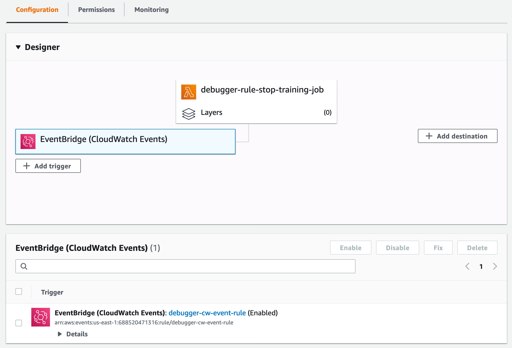

Create Actions on Rules Using Amazon CloudWatch and AWS Lambda
Amazon CloudWatch collects Amazon SageMaker model training job logs and Amazon SageMaker Debugger rule processing job logs. Configure Debugger with Amazon CloudWatch Events and AWS Lambda to take action based on Debugger rule evaluation status.
CloudWatch Logs for Debugger Rules and Training Jobs
To find training job logs and Debugger rule job logs
Open the CloudWatch console at https://console.aws.amazon.com/cloudwatch/
. -
In the left navigation pane under the Log node, choose Log Groups.
-
In the log groups list, do the following:
-
Choose /aws/sagemaker/TrainingJobs for training job logs.
-
Choose /aws/sagemaker/ProcessingJobs for Debugger rule job logs.
-
You can use the training and Debugger rule job status in the CloudWatch logs to take further actions when there are training issues.
For more information about monitoring training jobs using CloudWatch, see Monitor Amazon SageMaker.
Set Up Debugger for Automated Training Job Termination Using CloudWatch and Lambda
The Debugger rules monitor training job status, and a CloudWatch Events rule watches the Debugger rule training job evaluation status.
Step 1: Create a Lambda Function
To create a Lambda function
Open the AWS Lambda console at https://console.aws.amazon.com/lambda/
. -
In the left navigation pane, choose Functions and then choose Create function.
-
On the Create function page, choose Author from scratch option.
-
In the Basic information section, enter a Function name (for example, debugger-rule-stop-training-job).
-
For Runtime, choose Python 3.7.
-
For Permissions, expand the drop down option, and choose Change default execution role.
-
For Execution role, choose Use an existing role and choose the IAM role that you use for training jobs on SageMaker.
Note
Make sure you use the execution role with
AmazonSageMakerFullAccessandAWSLambdaBasicExecutionRoleattached. Otherwise, the Lambda function won't properly react to the Debugger rule status changes of the training job. If you are unsure which execution role is being used, run the following code in a Jupyter notebook cell to retrieve the execution role output:import sagemaker sagemaker.get_execution_role() -
At the bottom of the page, choose Create function.
The following figure shows an example of the Create function page with the input fields and selections completed.

Step 2: Configure the Lambda function
To configure the Lambda function
-
In the Function code section of the configuration page, paste the following Python script in the Lambda code editor pane. The
lambda_handlerfunction monitors the Debugger rule evaluation status collected by CloudWatch and triggers theStopTrainingJobAPI operation. The AWS SDK for Python (Boto3)clientfor SageMaker provides a high-level method,stop_training_job, which triggers theStopTrainingJobAPI operation.import json import boto3 import logging logger = logging.getLogger() logger.setLevel(logging.INFO) def lambda_handler(event, context): training_job_name = event.get("detail").get("TrainingJobName") logging.info(f'Evaluating Debugger rules for training job: {training_job_name}') eval_statuses = event.get("detail").get("DebugRuleEvaluationStatuses", None) if eval_statuses is None or len(eval_statuses) == 0: logging.info("Couldn't find any debug rule statuses, skipping...") return { 'statusCode': 200, 'body': json.dumps('Nothing to do') } # should only attempt stopping jobs with InProgress status training_job_status = event.get("detail").get("TrainingJobStatus", None) if training_job_status != 'InProgress': logging.debug(f"Current Training job status({training_job_status}) is not 'InProgress'. Exiting") return { 'statusCode': 200, 'body': json.dumps('Nothing to do') } client = boto3.client('sagemaker') for status in eval_statuses: logging.info(status.get("RuleEvaluationStatus") + ', RuleEvaluationStatus=' + str(status)) if status.get("RuleEvaluationStatus") == "IssuesFound": secondary_status = event.get("detail").get("SecondaryStatus", None) logging.info( f'About to stop training job, since evaluation of rule configuration {status.get("RuleConfigurationName")} resulted in "IssuesFound". ' + f'\ntraining job "{training_job_name}" status is "{training_job_status}", secondary status is "{secondary_status}"' + f'\nAttempting to stop training job "{training_job_name}"' ) try: client.stop_training_job( TrainingJobName=training_job_name ) except Exception as e: logging.error( "Encountered error while trying to " "stop training job {}: {}".format( training_job_name, str(e) ) ) raise e return NoneFor more information about the Lambda code editor interface, see Creating functions using the AWS Lambda console editor.
-
Skip all other settings and choose Save at the top of the configuration page.
Step 3: Create a CloudWatch Events Rule and Link to the Lambda Function for Debugger
To create a CloudWatch Events rule and link to the Lambda function for Debugger
Open the CloudWatch console at https://console.aws.amazon.com/cloudwatch/
. -
In the left navigation pane, choose Rules under the Events node.
-
Choose Create rule.
-
In the Event Source section of the Step 1: Create rule page, choose SageMaker for Service Name, and choose SageMaker Training Job State Change for Event Type. The Event Pattern Preview should look like the following example JSON strings:
{ "source": [ "aws.sagemaker" ], "detail-type": [ "SageMaker Training Job State Change" ] } -
In the Targets section, choose Add target*, and choose the debugger-rule-stop-training-job Lambda function that you created. This step links the CloudWatch Events rule with the Lambda function.
-
Choose Configure details and go to the Step 2: Configure rule details page.
-
Specify the CloudWatch rule definition name. For example, debugger-cw-event-rule.
-
Choose Create rule to finish.
-
Go back to the Lambda function configuration page and refresh the page. Confirm that it's configured correctly in the Designer panel. The CloudWatch Events rule should be registered as a trigger for the Lambda function. The configuration design should look like the following example:

Run Example Notebooks to Test Automated Training Job Termination
You can run the following example notebooks, which are prepared for experimenting with stopping a training job using Debugger's built-in rules.
-
Amazon SageMaker Debugger - Reacting to CloudWatch Events from Rules
This example notebook runs a training job that has a vanishing gradient issue. The Debugger VanishingGradient built-in rule is used while constructing the SageMaker TensorFlow estimator. When the Debugger rule detects the issue, the training job is terminated.
-
Detect Stalled Training and Invoke Actions Using SageMaker Debugger Rule
This example notebook runs a training script with a code line that forces it to sleep for 10 minutes. The Debugger StalledTrainingRule built-in rule invokes issues and stops the training job.
Disable the CloudWatch Events Rule to Stop Using the Automated Training Job Termination
If you want to disable the automated training job termination, you need to disable the CloudWatch Events rule. In the Lambda Designer panel, choose the EventBridge (CloudWatch Events) block linked to the Lambda function. This shows an EventBridge panel below the Designer panel (for example, see the previous screen shot). Select the check box next to EventBridge (CloudWatch Events): debugger-cw-event-rule, and then choose Disable. If you want to use the automated termination functionality later, you can enable the CloudWatch Events rule again.